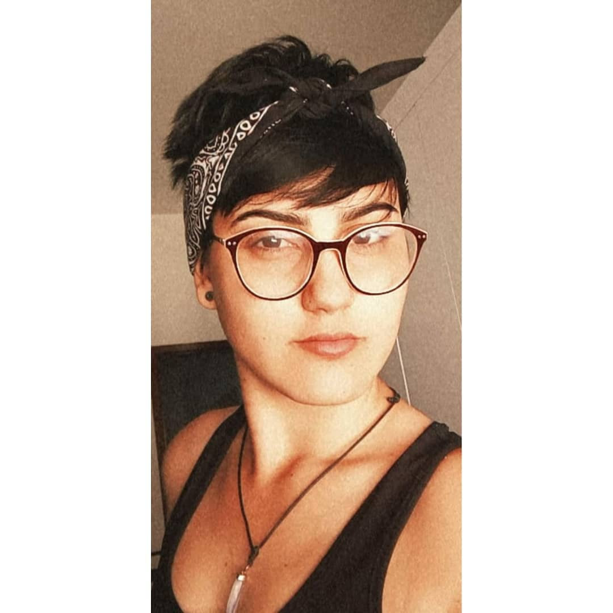

Me chamo Isadora de Araújo Viegas
Sou naturalmente brasileira e mineira. Nasci em Belo-Horizonte e vivi lá até meus 12 anos de idade, atualmente moro em Paŕá de Minas (interior de Minas Gerais). Tenho 19 anos, e me formei no ensino médio em 2019. Me ingressei na faculdade, cursando Matemática na Ufv.Não me indentifiquei com o curso, foi quando conheci a Trybe e apaixonei. Tranquei a faculdade e me dediquei ao processo seletivo da Trybe. Tive êxito atualmente me encontro na Trybe e espero aproveitar o máximo póssivel de conhecimento.
Aqui você tem acesso à minha foto
Aqui vai um site que curto bastante